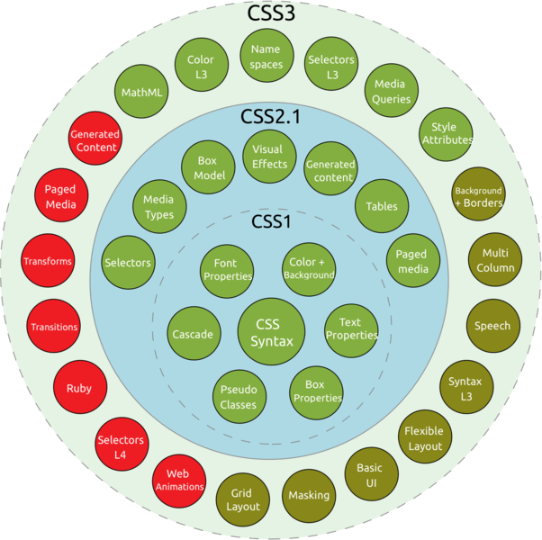

What is CSS?
Definition
CSS is called Cascading Style Sheets, this language is used to style elements written in a markup language such as HTML. CSS separates the content from the visual representation of the website. Think about the decoration of your page. Using CSS it is possible to change the color of the text and the background, font and spacing between paragraphs. You can also create tables, use layout variations, adjust images for their respective screens, and so on.
Brief History
When HTML was created, it was by no means intended to format information. As HTML became more popular and evolved, the mastery of controlling some appearances for the document was included in its qualities. This made the language very complex, more difficult to understand and maintain. Another problem was that browsers had differences in implementations, which made it difficult to view the sites, bringing less control over web browsing.
At that time the savior of the motherland appeared. Håkon Wium Lie, seeing all this difficulty, decided to create an easier way to format the information. That's when he proposed the creation of CSS or Cascading Style Sheets ... That was the year of 1994. The two then worked together at the beginning of the development of the CSS. The result appeared soon, in 1996, they launched the official recommendation by the W3C of CSS Level 1 (CSS 1).
CSS Versions
Version 1 - 1996
The first CSS specification to become an official W3C Recommendation is CSS level 1, published on December 17, 1996. Håkon Wium Lie and Bert Bos are credited as the original developers.
It included properties for adding font properties such as typeface and emphasis color of text, backgrounds, and other elements text attributes such as spacing between words, letters, and lines of text. Unfortunately, lack of dependable web browser support prevented the popularity of CSS Level 1 for several years.
Version 2 - 1998
CSS level 2 (CSS2) specification was developed by the W3C and published as a recommendation in 1998. Its most notably added properties for positioning that allowed CSS to be used for page layout. It also introduced styles for other media types and more sophisticated methods for selecting elements for styling.
Version 3 - 1999 (current)
The earliest CSS level 3 (CSS3) drafts were published in 1999. CSS3 adds presentation-style properties, allowing you to effectively build presentations from Web documents. CSS level 3 is divided into several separate documents called modules. Due to the modularization, different modules have different stability and statuses.
There is no single CSS4 specification and there is no standard which named as CSS4. But a few level 4 modules exist such as Image Values, Backgrounds & Borders, or Selectors etc., which build on the functionality of a preceding level 3 module. The level 4 modules can collectively be referred to as CSS level 4. There is only CSS standard, and each module can level up independently.

CSS Modules defined with CSS3
Why use CSS?
The difference between a website that implements CSS and one that does not use it is huge and notable. You may have seen a website that doesn't load completely or has a white background with blue and black text. This means that the CSS part of the website has not been loaded correctly or does not exist.
And this is what an HTML-only site looks like. I believe you will agree with me that this is not very beautiful, right?
Before using CSS, all styling had to be included in the HTML file. This means that you should describe the entire background, font colors, alignments, etc. separately.
But CSS allows you to style everything in a different file, thus creating the style separately. And, later, integrate the CSS file at the top of the HTML file. This keeps the HTML clean and easy to maintain.
In short, with CSS you no longer need to repeatedly write what the individual elements look like. This saves time, shortens the code and decreases the chance of errors.
CSS allows you to have multiple styles on an HTML page, making the customization possibilities almost endless. Nowadays, this is becoming more of a necessity than a simple resource.
CSS Syntax
The basic building blocks of CSS Syntax are:
- The property which is an identifier, that is a human-readable name, that defines which feature is considered.
- The value which describe how the feature must be handled by the engine. Each property has a set of values.
CSS Declarations
Setting CSS properties to specific values is the core function of the CSS language. A property and value pair is called a declaration, and any CSS engine calculates which declarations apply to every single element of a page in order to appropriately lay it out, and to style it.

Example of a CSS Declaration
Basic CSS Selectors
CSS selectors define the elements to which a set of CSS rules apply. Here are the most important ones:
- The universal selector which selects all elements has the following syntax: * {...}
- The element selector which selects all elements based on the element name: p {...}
- The id selector uses the id attribute of an element to select only that specific one. The id on an element is unique within a page, to select an id, use the following syntax: # idname {...}
- The class selector selects HTML elements with a specific class atribute. To select elements with a specific class, use the following syntax:
. classname {...}
Types of CSS
Inline CSS
Inline CSS is used for a specific HTML tag. The <style> attribute is used to format a specific HTML tag. Using CSS in this way is not recommended, as each HTML tag needs to be named individually. Managing your website can become very difficult if you only use inline CSS. However, it can be useful in some situations.
For example, in cases where you don't have access to CSS files or need to apply style to a single element. An example of an HTML heading tag with inline CSS would look like this:
Typical Inline CSS Structure
Advantages
- Useful if you want to test and preview changes.
- Useful for quick fixes.
- Reduces HTTP requests.
Disadvantages
- Inline CSS must be applied to each element.
Internal CSS
Internal CSS code is placed in the <head> section of a given html page. Classes and IDs can be used to refer to CSS code, but they are only active on that specific page. CSS styles incorporated in this way are downloaded each time the page loads so that it can increase the loading speed.
However, there are some cases when the internal style page is useful. An example would be to send someone a page template - as everything is on a page, it is much easier to see a preview. The internal CSS is placed between <style> </style> tags. An example of an internal style page:

Typical Internal CSS Structure
Advantages
- Only one page is affected by the style page.
- Classes and IDs can be used by the internal stylesheet.
- There is no need to upload multiple files. HTML and CSS can be in the same file.
Disadvantages
- Increased page load time.
- It affects only one page - it is not useful if you want to use the same CSS in multiple documents.
External Style Sheet
Probably the most convenient way to add CSS to your website is to link it to an external .css file. That way, any changes made to an external CSS file will be reflected on your website globally. A reference to an external CSS file is placed in the <head> section of the page.
<head>
<link rel="stylesheet" type="text/css" href="style.css" />
</head>In the meantime, the style.css file contains all the style rules (selectors and declarations). For example:

Typical External CSS Structure
Advantages
- Smaller size of HTML pages and cleaner structure.
- Faster loading speed.
- The same .css file can be used on multiple pages.
Disadvantages
- Until the external .css file is loaded, the page may not be rendered correctly.
Useful CSS Properties
| Property | Description | Values |
|---|---|---|
| color | Element color. | {black, white, ...} |
| background-color | Background color. | {black, white, ...} |
| background-image | Sets the background image. | |
| display | Display behaviour. | {block, inline-block, inline, none} |
| width | Element width. | {10px, 50%, ...} |
| height | Element height. | {10px, 50%, ...} |
| min-width | Minimum width. | {10px, 50%, ...} |
| min-height | Minimum height. | {10px, 50%, ...} |
| max-width | Maximum width. | {10px, 50%, ...} |
| max-height | Maximum height. | {10px, 50%, ...} |
| margin | Outter margins property. | {10px, 50%, ...} |
| padding | Inner margin property. | {10px, 50%, ...} |
| border | Border property. | |
| border-color | Border color. | {black, white, ...} |
| border-width | Border width. | {10px, 50%, ...} |
| border-style | Border style. | {none, solid, dotted, inset, dashed solid, ...} |
| border-radius | Border radius. | {50deg, ..} |
| font | Font properties. | font-family | Defines the font. | {sans-serif, ...} |
| font-style | Font Style | {normal, italic, oblique} |
| font-weight | Thickness of the font. | {normal, bold, lighter, bolder} |
| position | Type of positioning used for an element. | {static, relative, absolute, fixed, sticky} |
| z-index | Sets the order of overlapping elements. | {auto, -1, 0, 1, 2, 3, ...} |